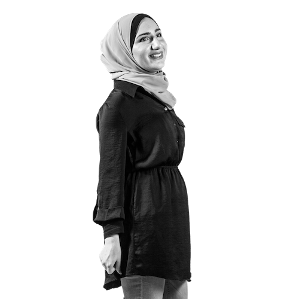

Hi, my name is Lama Ahmad. It's nice to meet you!
I'm a Social Research, Public Policy, and Interactive Media student at New York University Abu Dhabi.
I'm currently interning at Lucid as a Data Analyst and the
Poligon Education Fund as a Volunteer Coordinator.
Previously, I was President of Women Empowered in STEM at NYU Abu Dhabi.
I'm passionate about data-driven technology,
diversity and leadership initiatives for women, civic engagement, and social impact work. Right now, I'm learning more
about non-profit strategy, data visualizations, and policy analysis.
My interests include traveling, writing, coding, podcasts,
coffee, and social entrepreneurship.